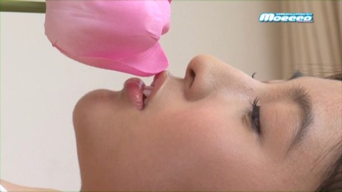
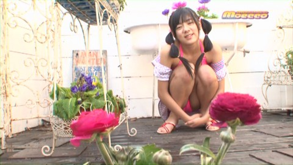
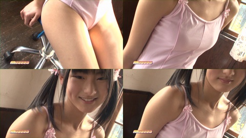
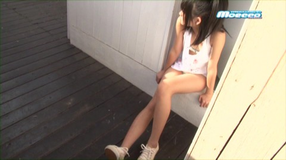
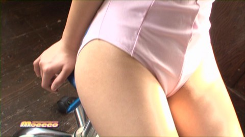

壁紙化：「moecco vol.31」 その１
「児童に挑発的なポーズ」を取らせている「イメージビデオ」DVD をキャプチャし壁紙化した。「moecco vol. 31」(2011年4月刊)を選んだのは、そこに出ているモデルの一人が、たまたまネットの 2ch まとめ系の成人向けサイトで、「とある野球選手の妹<b>っぽい</b>」とイメージビデオ風の写真付きで紹介されてたのが印象に残っていたため。
壁紙の紹介は２回に分ける。今回は、おとなしめのを選んだ。
ここに画像を貼付することは「引用」の範囲に留まると私は思っているが、壁紙として日常的に使用するとなるとそういう言い方は難しいかもしれない。壁紙をダウンロードする場合は、商品の購入を私は求める。雑誌で手に入りにくいことを考慮すれば中古で手に入らないなら最新号や該当のモデルの出てる最新のものの購入は最低限して欲しいところ。(もちろん、原著作者に別のどこかでいいと言ってもらってるなら、何ら問題はない。仮に、私の「編集著作権」みたいなものが生じていたとしても、それは放棄する。)
なお、この個別ページは検索よけのメタタグを設定しており、検索よけしてないブログトップやカテゴリトップでは、本体へのリンクのない極小画像しか表示されない配慮をしている。その上で、できるだけ公式なサイトへのリンクをし、ブログ主本人によるリファラ付きのクリックを一度はしている。(これらの点について《デスクトップ壁紙公開についてのこのサイトのポリシー》で少し詳しい説明をしてある。)
ここより下に貼ってある縮小画像をクリックすると、大きな壁紙がダウンロードされるはず。(一日100枚以上のダウンロードがあったあとなど、しばらくダウンロード用リンクが停止されることがあります。そうなっていたら、すみません。)
なお、添字的な数字の抜けがあったりするのは、バージョン違いなどで、公開していないものがあるというだけのこと。
■賢者タイム
私はいわゆる二次オタだが三次元のリアル女性に性的関心がないわけではなく、成人向け「エロ動画」も見る。しかし、昔から、アイドル系には関心が薄く、正直、もっと「実用的」なものがあるのになぜこういう「イメージビデオ」が必要なのか今でもよくわからない。
特定のマニアが喜ぶだけのはずの「児童に挑発的なポーズ」を取らせたビデオを、官憲が昔の基準で「猥褻」と認めるのは難しくとも、そのエスカレートには何らかの規制が必要で、児童虐待防止という観点から攻めていったのが昨今の情勢だった。
確かに本人が承諾していても未成年の意志表示は完全ではなく保護に値する場合があるが、裏に一線を超える行為があるなら児童保護が必要なことは昔から変わったわけではない。メディアへの露出が記録として長く残ることも昔からである。あえて言えば、ネットで露出するだけならコストがかからず、参入障壁が低くなったため、十分にコストをかけていない「保護」が増えたかもしれないとは言える。
処女性が若い男を軍や学問などに縛りつけるための反面として求められることを考えると、この規制はむしろ若い男の幻想を保護する意味が大きいのだろう。しかし、風紀の乱れで「リア充」にチャンスタイムが増えれば、ポルノはそもそも売春の代替で、売春が「リア充」のおこぼれである面を見れば、性に飢えた若者は案外損をしない。そもそもポルノを手にするようなとき処女性を求めるものではなく、ポルノに出るような者は特別な者という幻想が壊れないよう、知っている者がポルノに出ているような「事故」を防ぐ必要があるなら、それは未成年に限る話ではない。
専門化が進んで高齢でも海外派遣される可能性が増え、娘があまりにもヒドい状況にならないよう確認を行いたいという需要を受けて「ガサ入れ」の論理を欲したというのはありうる話か。私にはわからないが経験を積んだ者はそぶりからいろいろわかるらしい。こういう「イメージビデオ」を孫の写真の代わりに見てる者がいるってのは流通側の言い訳のように思っていたが、案外そのあたりが真実なのかもしれない。
ここまでは「イメージビデオ」を見なくてもできる話。こういった話は「ひとこと」のほうで何度か言及していたが、一度実際のビデオは観てみたいと思っていた。先のファッション誌の壁紙化の記事でも書いたが、壁紙にするにはエロすぎるのはマズい。モロなエロでないグラビア系の壁紙をちゃんと肖像権に金を払ってから作りたいと考えたのを良い機会として、この DVD を手に入れた。
雑誌の付録という体裁で価格が安く、多くのモデルが出ているのも種類を増やせそうで、一番上に書いたように以前写真を観たことがあるから、まるっきり「はずれ」もないだろうと判断して、この号を選んで買ってみた。
PC で DVD を再生しながら「ここぞ」を見計らってキャプチャ。うーん、デカルチャー…。
■DVD の概要
人数の水増しというわけではなく、そういうものなんだろうが、この DVD 用に撮りおろした感じのモデルと、他のイメージビデオの宣伝として入っているモデルがあって、今回は、撮りおろし風のモデル４人分のみ壁紙化した。
DVD では出演順で、星野せいら【JC2】、岡田亜以乃【JC3】、菊池麻里【JC1】、百瀬エナ【JC1】、杏佳【JC2】、安西かな【JC3】、水波メイカ【JC1】、一色海鈴【JC1】。撮りおろし風だったのは、星野せいら、菊池麻里、杏佳、水波メイカ。本では、それ以外の子の写真もあるが、メインはその４人(と安西かな) な感じ。
ちなみに「JC」は女子中学生、「JS」は女子小学生の略の模様。キャプチャ画像のサイズ合わせなどの加工は GIMP で行っている。
いくつかの画像は、HTML の IMG タグのクラスに sexual が指定され、本サイトの機能として、それらはワンクッション置いて、クリックしてからじゃないと見られないようになっている。JavaScript による実装のため、古いブラウザだったりJavaScript が使えないところだと、見えなかったり逆に最初から見えちゃったりするかもしれない。
■星野せいら

■菊池麻里

↑は特に過激でもないが、風呂で水着というおかしなシチュエーションがまるわかりであることに考慮して sexual 指定を入れた。
■杏佳
■水波メイカ

この子が、「某プロ野球選手の妹<b>っぽい</b>」として写真を見たことがあった子。
↑は「挑発的」ではあるが、この写真では性的というよりは反感が前に出た「挑発」性と見て、sexual 指定をしなかった。


↑の sexual 指定を入れたものは上の四つ組のものと一連のものだが、座っている腰部のアップになる。運動で使うこともあるレオタード自体は過激ではないが、視線を固定するとイヤらしさが際立つ。
この場面、DVD ではカメラは「なめあげる」ように撮っていく。これを壁紙化しようとしたとき、DVD のキャプチャ画像は 720x480 で 1920x1080 より小さいので、できれば、キャプチャをつなげて一枚の座った絵にできないか、いろいろ試したのだが、動画ゆえにモデルが少し動いていて、しっくり来なかった。詰め込み方を工夫したりしたが、結局はシンプルに四つ並べたのが一番、いい感じになった。個人的には、これなら「イヤらしさ」よりも「健康なかわいさ」のほうが先に立つように思う。だから、要素としては sexual 指定した物とほぼ同じ物を含んでいるけど、四つ組のほうは sexual 指定をしなかった。
自分で編集してみて、基本的には、衣装・ポーズ・表情の要求など女の子の状態で現代的な猥褻性みたいなのが決まるとして、アングルや芸術性とか、その後の扱いなど男の側の状況は免責事項…「大目に見られることもあるかな？」要素といった感じか。DVD が OK だから、その一部を取り出しただけのキャプチャも自動的に OK かというと、上の四つ組 vs 腰部アップのみの例と同じようにダメなこともあるとすべきなのだろう。
さて、『moecco vol. 31』壁紙化の「その２」は、この「その１」に比べかなりキワドクなる予定。Z指定の18禁まではいかないが、R指定の18歳推奨ぐらいにはなりうる。 実は、sexual 指定をして投稿したものにワンクッションを置く機構は、それに備えて突貫で用意したもの。実は、この記事も含め、ここまでに sexual 指定したものは実験的な利用に過ぎず、本当は、その指定がなくても大きな問題はなかったと私は考えている。でも、次は…。
更新：2014-02-01
初公開：2014年02月01日 12:28:48
最新版：2014年02月01日 12:56:18
Links: 「moecco vol. 31」: http://www.dmm.com/mono/book/-/detail/=/cid=bkt07258421/ (hbm) デスクトップ壁紙公開についてのこのサイトのポリシー: http://jrf.cocolog-nifty.com/column/2013/09/post.html 「ひとこと」のほうで何度か言及していた: http://www.google.com/search?hl=en&safe=off&lr=lang_ja&pws=0&q=%E5%85%90%E7%AB%A5%E3%83%9D%E3%83%AB%E3%83%8E%20(site%3Ajrf.cocolog-nifty.com%20OR%20site%3Ahttp%3A%2F%2Fb.hatena.ne.jp%2Fjrf%2F) ファッション誌の壁紙化の記事: http://jrf.cocolog-nifty.com/column/2014/01/post-3.html デカルチャー: http://dic.nicovideo.jp/a/%E3%83%87%E3%82%AB%E3%83%AB%E3%83%81%E3%83%A3%E3%83%BC (hbm) GIMP: http://www.gimp.org/ (hbm) moecco vol. 31: http://www.myway-pub.jp/catalog/index.php?main_page=product_info&products_id=749
後方参照 (1 件)
- URL参照 水着撮影会問題と未成年のイメージビデオについて少し考えた。コストのかかりにくいニ… 2023年06月17日